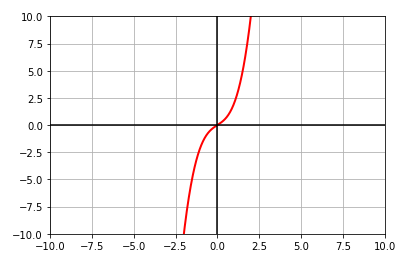
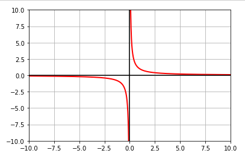

| PolarSPARC |
Introduction to Calculus - Part 1
| Bhaskar S | 03/06/2021 |
Basic Definitions
Calculus is the branch of mathematics that involves the study of continuous change. There are two branches of Calculus, which are defined as follows:
| Name | Description |
|---|---|
| Differential Calculus | focuses on rate of change of some variable with respect to another |
| Integral Calculus | focuses on the accumulated value of a variable given the rate of change |
A Cartesian Plane is the two-dimensional rectangular coordinate system, where the horizontal real-number line is referred to as the x-axis and the vertical real-number line is referred to as the y-axis. Each point on this two-dimensional coordinate system is represented as an ordered pair (x, y). The first element x is referred to as the x-coordinate and is the directed distance from the y-axis to the point. Similarly, the second element y is referred to as the y-coordinate and is the directed distance from the x-axis to the point.
The following graph illustrates the two coordinate points (\(x_1, y_1\)) and (\(x_2, y_2\)) on a two-dimensional cartesian plane:
The distance between the two coordinate points can be computed using the formula for the Pythagorean Theorem \(a^2 + b^2 = c^2\) as follows:
Distance \(d = \sqrt{(x_2 - x_1)^2 + (y_2 - y_1)^2}\)
The coordinates of the mid-point between the two coordinate points can be computed as follows:
Coordinates of the mid-point \(\Large{\frac{(x_1 + x_2)}{2}, \frac{(y_1 + y_2)}{2}}\)
The equation for a line in the Slope-Intercept is represented by the general formula: \(y = mx + b\), where m represents the Slope of the line and b represents the y-Intercept (the point where the line intersects with the y-axis).
The slope of a line is the ratio of change along the y-axis that corresponds to a change along the x-axis. Using the graph shown above, the slope can be computed as follows:
Slope m = \(\Large{\frac{rise}{run} = \frac{\Delta{y}}{\Delta{x}} = \frac{y_2 - y_1}{x_2 - x_1}}\)
If the slope of a line m is known and the line passes through a known point \(x_1, y_1\), then the line can be represented by the following equation:
m = \(\Large{\frac{y - y_1}{x - x_1}}\)
\(y - y_1 = m(x - x_1)\)
\(y = m(x - x_1) + y_1\)
The above equation of a line is said to be in the Point-Slope form.
If L1 and L2 are two lines with slopes m1 and m2 respectively, then the lines L1 and L2 are parallel to each other if:
Slope m1 = Slope m2
Similarly, the lines L1 and L2 are said to be perpendicular to one another if:
Slope \(m_1\) = Slope \(\Large{-\frac{1}{m2}}\)
Let us look at an example now.
| Example-1 | The maximum recommended slope of a wheelchair ramp is \(\Large{\frac{1}{12}}\) \(\approx 0.083\). A school is installing a ramp that rises 22 inches over a horizontal length of 24 feet. Is the ramp steeper than recommended ? |
|---|---|
|
Notice the horizontal length is 24 FEET. 24 feet = 12 (24) = 288 inches. Slope of the ramp = \(\Large{\frac{\Delta height}{\Delta length}}\) = \(\Large{\frac{22}{288}}\) \(\approx 0.076\) RESULT: since 0.076 is smaller than 0.083, the slope is NOT steeper than recommended |
|
Let us look at another example.
| Example-2 | The cash flow per share for a company was \$2.51 in 2004 and \$2.65 in 2005. Using only this information, write a linear equation that gives the cash flow per share in terms of the year. Then predict the cash flow for 2006. |
|---|---|
|
Let the variable t represent the year. Also, let t = 4 represent 2004 and t = 5 represent 2005. Slope of the equation = \(\Large{\frac{\Delta cashflow}{\Delta year}}\) = \(\Large{\frac{2.65 - 2.51}{5 - 4}}\) = 0.14 Using the Point-Slope form, we can write the equation as: \(y = 0.14(t - 4) + 2.51 = 0.14t + 1.95\) RESULT: the cash flow for 2006 would be 0.14(6) + 1.95 = 2.79 |
|
Now, let us look at one more example.
| Example-3 | The pressure p on a diver is a liner function of the depth d. The pressure at 20 meters is 2.988 atmospheres and an increase of 5 meters in depth corresponds to an increase of 0.497 atmosphere. Find the pressure at 23 meters |
|---|---|
|
The relationship between p and d is a linear function and so the ratio of their increments will be constant. \(\Large{\frac{\Delta p}{\Delta d}}\) = \(\Large{\frac{0.497}{5}}\) = 0.0994 atmosphere per meter From d = 20 to 23, the change in depth: \(\Delta{d} = 3\), so \(\Delta{p} = 3(0.0994) = 0.2982\). RESULT: the pressure at d = 23 is 2.988 + 0.2982 = 3.2862 |
|
Limit of a Function
The relationship between two variables can be represented as a point (an ordered pair) on a Cartesian plane. The set of all the first elements (x-coordinates) is referred to as the Domain, while the set of all the second elements (y-coordinates) is referred to as the Range. Typically, the x-coordinate is also referred to as the Independent variable and the y-coordinate is the Dependent variable.
A Function is a relationship such that every element in the domain corresponds to exactly one element in the range. In other words, for each value of the independent variable there corresponds exactly one value of the dependent variable. A function is typically denoted as \(f(x)\).
The Limit of a function allows one to describe how the output of the function behaves as the input approaches a target value. In other words, the limit of a function f(x) indicates the output value L the function reaches arbitrarily close to as the input value of x approaches a certain value c from either the left (x < c) or from the right (x > c) and is represented by the following expression:
\(\lim_{x \to c} f(x) = L\)
The limit of the function f(x) as x approaches the value c from the left is represented as follows:
\(\lim_{x \to c^-} f(x) = L\)
And. the limit of the function f(x) as x approaches the value c from the right is represented as follows:
\(\lim_{x \to c^+} f(x) = L\)
The limit for a function f(x) does NOT exist in the following situations:
f(x) approaches different values as x approaches c from the left and the right
f(x) approaches infinity as x approaches c from the left and the right
Let us look at an example now.
| Example-4 | Find the limit \(\lim_{x \to 1} f(x)\) where \(f(x) = \Large{\frac{x^2 - 1}{x - 1}}\) | ||||||||||||||||||||
|---|---|---|---|---|---|---|---|---|---|---|---|---|---|---|---|---|---|---|---|---|---|
|
Case 1: As x approaches 1 from the left
As can be inferred from the table above, as x approaches 1 from the left, f(x) approaches 2. Case 2: As x approaches 1 from the right
As can be inferred from the table above, as x approaches 1 from the right, f(x) approaches 2. RESULT: the limit of f(x) is 2 as x approaches 1. |
|||||||||||||||||||||
Let us look at another example.
| Example-5 | Find the limit \(\lim_{x \to 1} f(x)\) where \(f(x) = \Large{\frac{|x - 1|}{x - 1}}\) | ||||||||||||||||||||
|---|---|---|---|---|---|---|---|---|---|---|---|---|---|---|---|---|---|---|---|---|---|
|
Case 1: As x approaches 1 from the left
As can be inferred from the table above, as x approaches 1 from the left, f(x) approaches -1. Case 2: As x approaches 1 from the right
As can be inferred from the table above, as x approaches 1 from the right, f(x) approaches 1. RESULT: the limit of f(x) is UNDEFINED as the limits are different as x approaches 1 from the left and the right. |
|||||||||||||||||||||
Now, let us look at one more example.
| Example-6 | Find the limit \(\lim_{x \to 2} f(x)\) where \(f(x) = \Large{\frac{3}{x - 2}}\) | ||||||||||||||||
|---|---|---|---|---|---|---|---|---|---|---|---|---|---|---|---|---|---|
|
Case 1: As x approaches 2 from the left
As can be inferred from the table above, as x approaches 2 from the left, f(x) approaches arbitrily large negative values or \(-\infty\). Case 2: As x approaches 2 from the right
As can be inferred from the table above, as x approaches 2 from the right, f(x) approaches arbitrily large positive values or \(\infty\). RESULT: the limit of f(x) is UNDEFINED as the limits are different as x approaches 2 from the left and the right. |
|||||||||||||||||
In many situations, one can find the limit of a function f(x) by directly substituting the value of x. This is typically the case when f(x) is a continuous function.
The following are some of the properties of limits for a continuous function f(x):
\(\lim_{x \to c} a = a\), where a is a constant
\(\lim_{x \to c} x = c\)
\(\lim_{x \to c} x^n = c^n\)
\(\lim_{x \to c} \sqrt[n]{x} = \sqrt[n]{c}\)
If f(x) and g(x) are two functions such that \(\lim_{x \to c} f(x) = L\) and \(\lim_{x \to c} g(x) = K\) AND b and c are two real number constants, then the following are some of the rules of limits:
\(\lim_{x \to c} [bf(x)] = bL\)
\(\lim_{x \to c} [f(x) + g(x)] = L + K\)
\(\lim_{x \to c} [f(x) - g(x)] = L - K\)
\(\lim_{x \to c} [f(x) * g(x)] = L * K\)
\(\lim_{x \to c} \frac{f(x)}{g(x)} = \frac{L}{K}\), where \(K \ne 0\)
\(\lim_{x \to c} [f(x)]^n = L^n\)
\(\lim_{x \to c} \sqrt[n]{f(x)} = \sqrt[n]{L}\)
Let us look at an example now.
| Example-7 | Find the limit \(\lim_{x \to 2} f(x)\) where \(f(x) = \Large{\frac{x^3 - 8}{x - 2}}\) |
|---|---|
|
Direct substitution of x = 2 will not work as both the numerator and denominator will become 0. Hence, we need to simplify the equation before we proceed. \(f(x) = \Large{\frac{x^3 - 8}{x - 2}}\) = \(\Large{\frac{(x - 2)(x^2 + 2x + 4)}{x - 2}}\) The common factor \(x - 2\) cancels out from both the numberator and the denominator. Therefore, \(f(x) = x^2 + 2x + 4\) \(\lim_{x \to 2} (x^2 + 2x + 4) = \lim_{x \to 2} x^2 + \lim_{x \to 2} 2x + \lim_{x \to 2} 4 = (2)^2 + 2(2) + 4 = 12\) RESULT: the limit of f(x) is 12. |
|
Let us look at another example.
| Example-8 | Find the limit \(\lim_{x \to 4} f(x)\) where \(f(x) = \Large{\frac{2x^3 - 128}{\sqrt{x} - 2}}\) |
|---|---|
|
Direct substitution of x = 4 will not work as both the numerator and denominator will become 0. Hence, we need to simplify the equation before we proceed. \(f(x) = \Large{\frac{2x^3 - 128}{\sqrt{x} - 2}}\) = \(\Large{\frac{2(x^3 - 64)}{\sqrt{x} - 2}}\) = \(\Large{\frac{2(x^3 - 64)}{\sqrt{x} - 2}.\frac{\sqrt{x} + 2}{\sqrt{x} + 2}}\) = \(\Large{\frac{2(x^3 - 64)(\sqrt{x} + 2)}{(x - 4)}}\) = \(\Large{\frac{2(x - 4)(x^2 + 4x + 16)(\sqrt{x} + 2)}{(x - 4)}}\) The common factor \(x - 4\) cancels out from both the numberator and the denominator. Therefore, \(f(x) = 2(x^2 + 4x + 16)(\sqrt{x} + 2)\) \(\lim_{x \to 4} 2(x^2 + 4x + 16)(\sqrt{x} + 2) = 2((4)^2 + 4(4) + 16)(\sqrt{(4)} + 2) = 2(16 + 16 + 16)(2 + 2) = 2 * 48 * 4 = 384\) RESULT: the limit of f(x) is 384. |
|
In general terms, a function f(x) is said to be Continuous at x = c, if there is no break or interruption (no holes or gaps) in the graph at x = c. In mathematical terms, if c is a number in the interval (a, b), and f(x) is a function whose domain contains the interval (a, b), then the function f(x) is continuous at the point c if the following conditions are true:
\(f(c)\) is defined
\(\lim_{x \to c} f(x)\) exists
\(\lim_{x \to c} f(x) = f(c)\)
If f(x) is continuous at every point in the interval (a, b), then it is continuous on an open interval (a, b).
Let us look at an example now.
| Example-9 | Discuss the continuity of the function \(f(x) = x^3 + x\) |
|---|---|
|
The following is the illustration of plotting the function \(f(x)\) on a graph: 
Fig.2
As can be observed from the graph of \(f(x)\) above, the function is a polynomial function that is continuous at every real number. RESULT: the function f(x) is continuous on an open interval \((-\infty, \infty)\). |
|
Let us look at another example.
| Example-10 | Discuss the continuity of the function \(f(x) = \Large{\frac{1}{x}}\) |
|---|---|
|
The following is the illustration of plotting the function \(f(x)\) on a graph: 
Fig.3
As can be observed from the graph of \(f(x)\) above, the function is continuous at every point except x = 0. RESULT: the function f(x) is continuous only in the open intervals \((-\infty, 0)\) and \((0, \infty)\). |
|